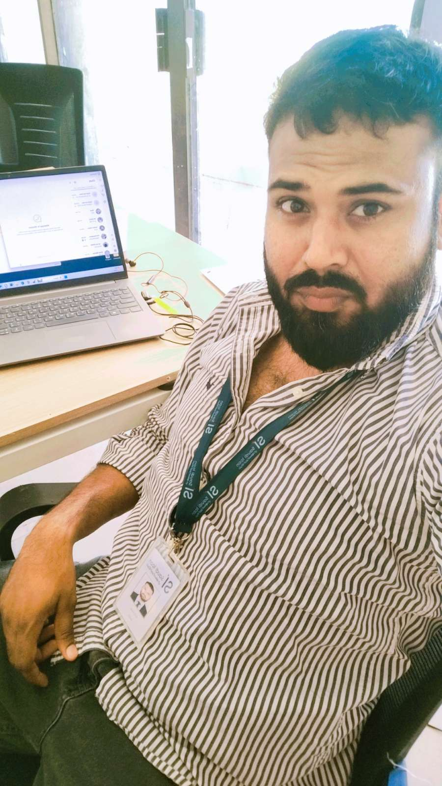

About Me
Hello! I'm Adil, an experienced admin and logistics professional dedicated to boosting efficiency and delivering seamless support.

Skilled in streamlining Site operations, managing logistics, and implementing digital tools, I ensure smooth workflows and strong team support to drive organizational success.
- Email: contact@omswithadil.in
- Phone: +971543897852
- City: New Delhi, INDIA
- Age: 32
- Current Employment: Saudi Icon - KSA
- Manpower: 1000+managed at Red SeaProject
I’m passionate about leveraging my expertise to enhance productivity and provide exceptional administrative support that drives results.
I developed a 👉 Click Me Digital Leave Management Dashboard to streamline leave tracking and improve workforce management efficiency.
Skills
Managing 1000+ manpower at Red Sea Project with smart reporting, automation, and real-time logistics coordination — blending admin expertise with tech-driven efficiency.
Site Admin & HR Coordination
- New Worker Onboarding & Documentation
- Attendance, Overtime & Absence Recording
- Daily & Monthly Manpower Reporting
- Resolving Salary Issues with Head Office HR
- Coordination between Site & HR for Payroll Accuracy
Logistics & Camp Coordination
- Managed camps using biometric for accurate data.
- Scheduled buses, drivers, and shifts.
- Transfers, passport renewals, and site access.
- Arranged travel & accommodation.
- Monitored supply deliveries & equipment.
- Communicated with vendors and transport teams.
Excel & Tech Tools
- Advanced Excel Skills: Pivot Tables, Lookup Functions
- Build Dashboard using Google sheet
- Developed a Manpower Dashboards
- Created Live Data Filters & Weekly/Daily Reports
- Leveraged Technology to Streamline Site Operations
Leave & Manpower Management
- Annual Leave Records
- Transfer / Rejoin Management
- Approved Leave History
- Termination Records
- Resignation Details
Resume
Here is a summary of my current and past experience, showcasing my strengths in administration, manpower coordination, documentation, and support services.
Current Role
Site Admin & Support Service Officer
Saudi Icon Co. – Red Sea Shura Island Project
November 2024 – Present
- Manpower Reporting: Prepare and maintain daily and weekly manpower distribution reports, detailing worker deployment and site locations specifically for the Red Sea Shura Island Project site operations.
- Record Management: Maintain complete and updated records of leave, transfers, terminations, resignations, and other administrative tasks.
- Passport Monitoring: Track passport expirations and coordinate renewals in collaboration with logistics teams.
- Salary Issue Handling: Communicate and coordinate with the HR head office to address and resolve salary-related issues through professional email correspondence.
- Onboarding & Documentation: Manage documentation of new arrivals, including CV collection, passport handling, ID verification, and support paperwork for mobilization.
- Administrative Support: Serve as the point of contact for site-based support services, ensuring smooth coordination between departments and maintaining operational efficiency.
Previous Role
HR Support Coordinator
SkySmart Consultancy – Dubai
May 2024 – October 2024
- Recruitment Assistance: Worked closely with HR team to manage candidate onboarding, including passport verification, CV screening, and ID checks.
- Documentation & Compliance: Maintained recruitment-related paperwork such as visa documents, contracts, and official records ensuring accuracy and compliance.
- Communication Management: Handled email correspondence between candidates, HR, and management to ensure seamless recruitment operations.
- Candidate Profile Management: Supported recruitment efforts by managing candidate profiles on platforms like Bayt, Indeed, and Google Business.
Logistic Coordinator
Estore India
February 2020 – November 2023
- Transportation Management: Coordinated daily transportation schedules for staff and materials, ensuring timely pickups, drop-offs, and deliveries across multiple locations.
- Route Planning & Optimization: Planned efficient routes to reduce travel time and fuel costs, improving overall logistics efficiency.
- Vendor & Fleet Coordination: Managed communication with transport vendors and monitored fleet performance to ensure availability and compliance with company standards.
- Logistics Tracking: Maintained real-time tracking of vehicle movements and material shipments using digital tools for improved visibility and control.
- Inventory & Supply Chain Support: Assisted in managing inventory movements, coordinating with warehouses, and ensuring essential supplies reached their destination without delay.
- Issue Resolution: Handled logistics-related complaints or delays proactively and ensured timely resolution with minimal operational impact.
Worked With
Proudly contributed to leading companies through hands-on experience in administrative and support operations.
Peer Reviews
Appreciation & Feedback from Team Members